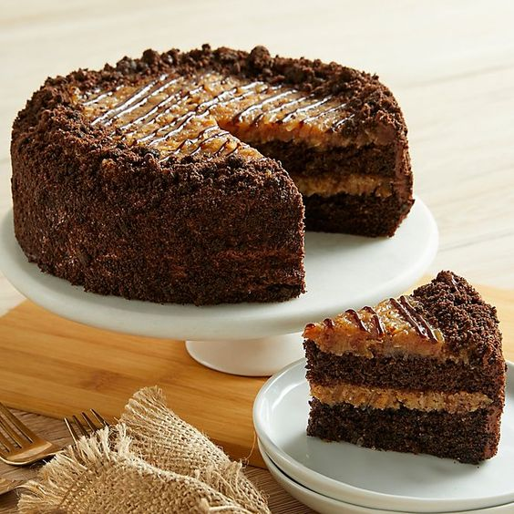

How to make Chocolate Cake (★★★★)

A classic European torte baked in a springform pan. Cream cheese, sliced almonds, and apples make this the perfect holiday treat (12 servings).
INGREDIENTS
- 1/2 cup butter
- 1/3 cup white sugar
- 1/4 teaspoon vanilla extract
- 1 cup all-purpose flour
- 1/4 cup white sugar
- 1 egg
- 1/2 teaspoon vanilla extract
- 200g dark chocolate
- 1/3 cup white sugar
- 1/2 teaspoon ground cinnamon
- 1/4 cup sliced almonds
DIRECTIONS
- Melt chocolate and butter in a double boiler or microwave
- Whisk the eggs and sugar until the mixture is fluffy and soft.
- Mix the melted chocolate into the egg mixture.
- Sift the flour and salt into the mixture.
REVIEWS
- ★★★★
★★★★ I loved the buttery taste of the crust which complements the apples very nicely. -- Reviewed on Sep. 22, 2010 by MMASON.
- ★★★★
Nothing special. I like the crust, but there was a little too much of it for my taste, and I liked the filling but there was too little of it. I thought the crunchy apples combined with the sliced almonds detracted from the overall flavor. -- Reviewed on Sep. 1, 2010 by GLENDACHEF.
- ★★★★
Delicious!! I recommend microwaving the apples for 3 minutes before baking, to soften them. Great dessert - I'll be making it again for the holidays. -- Reviewed on August 28, 2010 by BBABS.